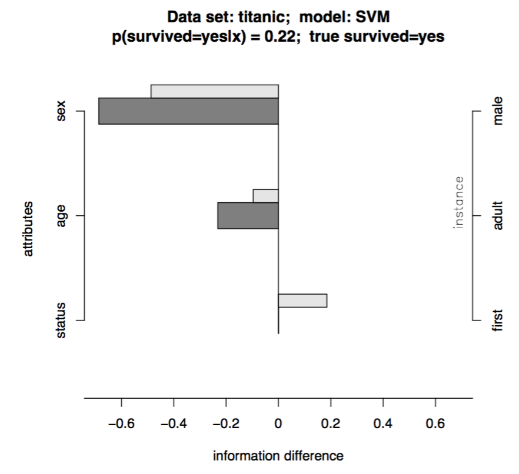
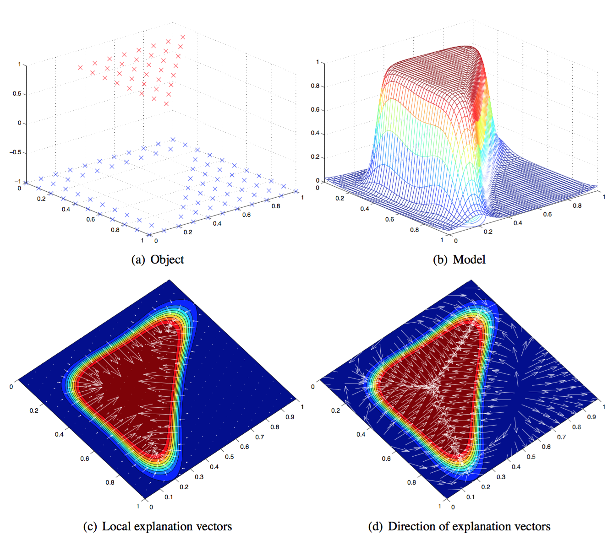
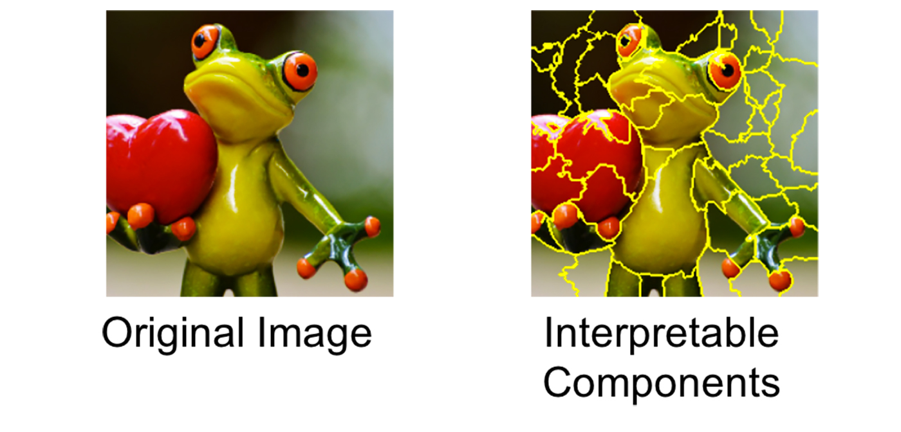
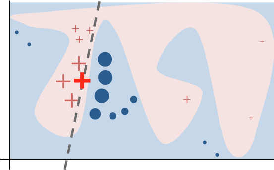
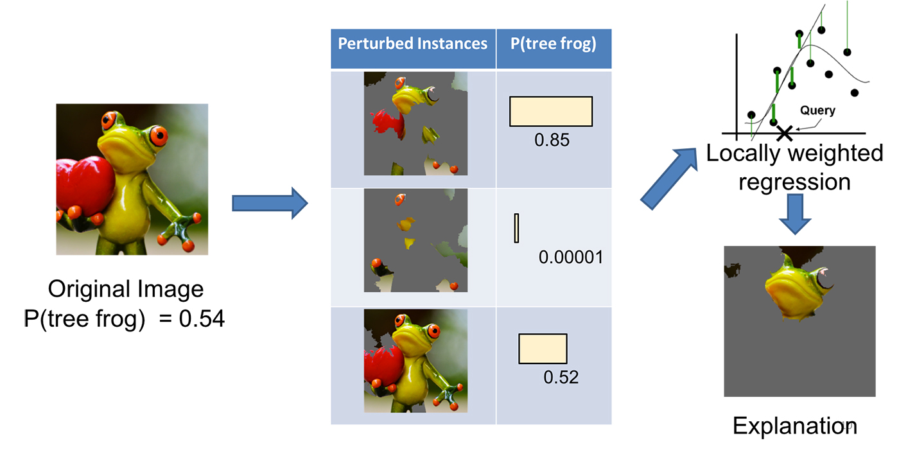
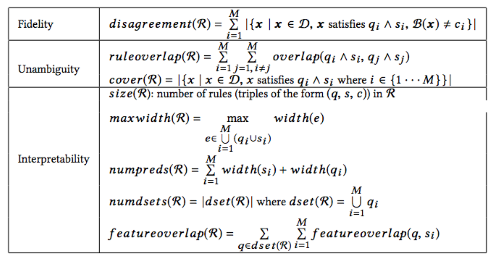
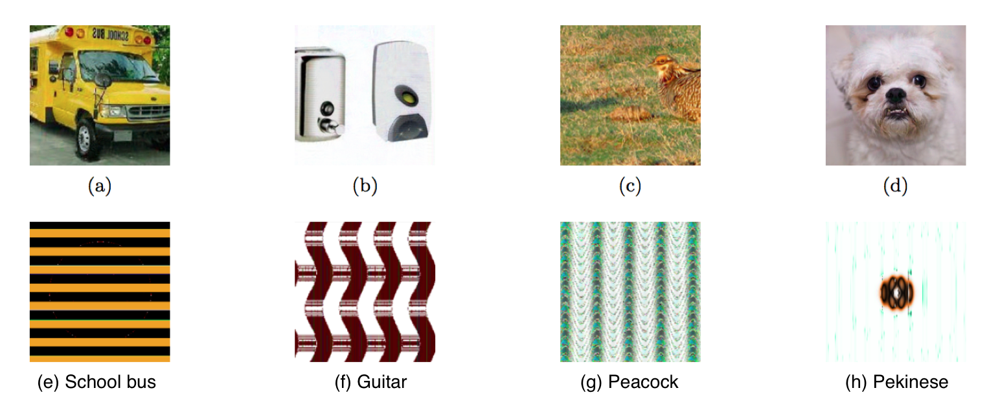

目录
- Interpretable Models Regression Naive Bayes Decision Tree/Decision Lists Random Forests
- Interpreting Black-Box Models Prediction Decomposition Local Gradient Explanation Vector LIME (Local Interpretable Model-Agnostic Explanations) Feature Selection BETA (Black Box Explanation through Transparent Approximations)
- Explainable Artificial Intelligence
- References
机器学习模型已经开始渗透到医疗保健、司法系统和金融行业等关键领域。因此，弄清楚模型如何做出决策，并确保决策过程符合伦理要求或法律法规，已成为必要。
与此同时，深度学习模型的快速发展进一步增加了对复杂模型进行解释的需求。人们渴望将人工智能的力量全面应用于日常生活的关键方面。然而，如果对模型缺乏足够信任，或者没有有效的程序来解释意外行为，就很难做到这一点，尤其是考虑到深度神经网络天生就是黑箱。
想想以下情况：
- 金融行业受到高度监管，贷款发放机构必须依法做出公平决策，并在拒绝贷款申请时解释其信用模型并提供理由。
- 医疗诊断模型关系到人的生命。我们如何才能足够自信地按照黑箱模型的指示治疗患者？
- 在法庭上使用刑事判决模型预测再犯风险时，我们必须确保模型以公平、诚实且非歧视性的方式运作。
- 如果一辆自动驾驶汽车突然行为异常，而我们无法解释原因，我们是否会放心在大规模真实交通环境中使用这项技术？
在 Affirm，我们每天发放数以万计的分期贷款，当模型拒绝某人的贷款申请时，我们的承保模型必须提供拒绝理由。这也是我深入研究并撰写这篇文章的众多动机之一。模型可解释性是机器学习领域的一个重要课题。本文绝非旨在穷尽每一项研究，而是作为一个起点。
可解释模型#
Lipton（2017）在一篇理论综述论文 “The mythos of model interpretability” 中总结了可解释模型的特性：人类能够重复（“可模拟性”）整个计算过程，并对算法有完整理解（“算法透明性”），同时模型的每个个体部分都有直观的解释（“可分解性”）。
许多经典模型结构相对简单，自然带有模型特定的解释方法。与此同时，新的工具正在被开发出来，以帮助创建更好的可解释模型（Been, Khanna, & Koyejo, 2016；Lakkaraju, Bach & Leskovec, 2016）。
回归#
线性回归模型的一般形式为：
系数描述了自变量每增加一个单位所引起的响应变量的变化。除非特征已经标准化（请查阅 sklearn.preprocessing.StandardScalar 和 RobustScaler），否则系数无法直接比较，因为不同特征的一个单位可能代表完全不同的事物。在未标准化的情况下，乘积 w_i \dot x_i 可用于量化一个特征对响应的贡献。
朴素贝叶斯#
朴素贝叶斯之所以称为“朴素”，是因为它基于一个非常简化的假设：特征之间相互独立，且每个特征都独立地对输出做出贡献。
给定特征向量 \mathbf{x} = [x_1, x_2, \dots, x_n] 和类别标签 c \in \{1, 2, \dots, C\}，该数据点属于此类的概率为：
朴素贝叶斯分类器则定义为：
由于模型在训练过程中已经学习了先验概率 p(x_i \vert c)，单个特征值的贡献可以很容易地通过后验概率 p(c \vert x_i) = p(c)p(x_i \vert c) / p(x_i) 来衡量。
决策树/决策列表#
决策列表是一组布尔函数，通常以 if... then... else... 的语法构建。if 条件包含一个涉及一个或多个特征的函数，并输出布尔值。决策列表天生具有良好的可解释性，可以用树状结构可视化。许多关于决策列表的研究都由医疗应用驱动，在这些领域中，可解释性几乎与模型本身同样重要。
以下简要介绍几种类型的决策列表：
- Falling Rule Lists (FRL)（Wang and Rudin, 2015）在特征值上完全强制实施单调性。例如，在二分类背景下，一个关键点是随着决策列表向下移动，每条规则关联的预测概率 Y=1 会逐渐降低。
- Bayesian Rule List (BRL)（Letham et al., 2015）是一种生成模型，能产生关于可能决策列表的后验分布。
- Interpretable Decision Sets (IDS)（Lakkaraju, Bach & Leskovec, 2016）是一个创建分类规则集的预测框架。其学习过程同时针对准确性和可解释性进行优化。IDS 与我将在 如何解释机器学习模型的预测？ 介绍的用于解释黑箱模型的 BETA 方法密切相关。
随机森林#
奇怪的是，许多人认为 Random Forests 模型是一个黑箱，这并不正确。因为随机森林的输出是由大量独立决策树通过多数投票得出的，而每棵树本身就是可解释的。
如果我们一次只查看一棵树，那么衡量单个特征的影响并不困难。随机森林的全局特征重要性可以通过整个集成中所有树的节点不纯度总减少量的平均值（“平均不纯度减少”）来量化。
对于单个实例，由于所有树中的决策路径都被良好跟踪，我们可以使用父节点中数据点的均值与子节点均值之间的差异来近似此次分裂的贡献。更多内容可阅读这一系列博客文章：Interpreting Random Forests。
解释黑箱模型#
许多模型在设计时并没有考虑可解释性。解释黑箱模型的方法旨在从训练好的模型中提取信息，以证明其预测结果，而无需了解模型内部的具体工作原理。将解释过程与模型实现保持独立，有利于实际应用：即使基础模型不断升级和优化，构建在其之上的解释引擎也不必担心这些变化。
由于无需担心模型的透明性和可解释性，我们可以通过增加更多参数和非线性计算来赋予模型更强的表达能力。这就是深度神经网络在处理丰富输入的任务中取得成功的原因。
对于解释应该如何呈现并没有严格要求，但首要目标主要是回答：我可以信任这个模型吗？当我们依赖模型做出关键或生死攸关的决策时，我们必须提前确保模型是可信的。
解释框架需要在两个目标之间取得平衡：
- 保真度：解释产生的预测应尽可能与原始模型一致。
- 可解释性：解释应足够简单，以便人类理解。
旁注：下面三种方法都是为局部解释设计的。
预测分解#
Robnik-Sikonja and Kononenko (2008) 提出，通过衡量原始预测与省略一组特征后得到的预测之间的差异，来解释模型对单个实例的预测。
假设我们需要为分类模型 f: \mathbf{X} \rightarrow \mathbf{Y} 生成解释。给定一个由属性 A_i 的 a 个个体值 i = 1, \dots, a 组成、标记为类别 y \in Y 的数据点 x \in X。预测差异通过计算模型在知道与不知道 A_i 情况下的预测概率之差来量化：
（该论文还讨论了使用优势比或基于熵的信息度量来量化预测差异。）
问题：如果目标模型输出概率，那就很好，得到 p(y \vert x) 很简单。否则，模型预测必须经过适当的后验建模校准，将预测分数转换为概率。这一校准层又增加了额外的复杂性。
另一个问题：如果我们通过用缺失值（例如 None、NaN 等）替换 A_i 来生成 x \backslash A_i，则必须依赖模型内部的缺失值填补机制。用中位数替换缺失值的模型，其输出会与使用特殊占位符填补的模型大不相同。论文中提出的一种解决方案是用该特征的所有可能值替换 A_i，然后按每个值在数据中出现的可能性加权求和预测值：
其中 p(y \vert x \leftarrow A_i=a_s) 是如果我们在 x 的特征向量中用值 a_s 替换特征 A_i 时，得到标签 y 的概率。在训练集中，A_i 有 m_i 个唯一值。
借助省略已知特征时的预测差异度量，我们可以分解每个个体特征对预测的影响。

局部梯度解释向量#
该方法（Baehrens, et al. 2010）能够使用局部梯度来解释任意非线性分类算法在局部做出的决策，这些梯度描述了数据点需要如何移动才能改变其预测标签。
假设我们有一个在数据集 X 上训练的 Bayes Classifier，它输出关于类别标签 Y、p(Y=y \vert X=x) 的概率。从类别标签池 \{1, 2, \dots, C\} 中抽取一个类别标签 y。这个贝叶斯分类器构造如下：
局部解释向量被定义为在测试点 x = x_0 处概率预测函数的导数。该向量中较大的条目突出了对模型决策有重大影响的特征；正号表示增加该特征会降低分配给 f^{*}(x_0) 的 x_0 概率。
然而，这种方法要求模型输出是概率（类似于上面的 如何解释机器学习模型的预测？ 方法）。如果原始模型（标记为 f）没有被校准以产生概率怎么办？论文建议，我们可以通过另一个形式上类似于贝叶斯分类器 f^{*} 的分类器来近似 f：
（1）对训练数据应用 Parzen window 来估计加权类别密度：
其中 I_c 是被模型 f 分配到类别 c 的数据点索引集合 I_c = \{i \vert f(x_i) = c\}。k_{\sigma} 是一个核函数。高斯核是 众多候选 中常用的一种。
（2）然后，应用贝叶斯规则来近似所有类别的概率 p(Y=c \vert X=x)：
（3）最终估计的贝叶斯分类器形式为：
注意，我们可以使用原始模型 f 生成任意数量的带标签数据，不受训练数据规模的限制。超参数 \sigma 被选择为优化 \hat{f}_{\sigma}(x) = f(x) 达到高保真度的机会。

旁注：如你所见，上述两种方法都需要模型预测是概率。对模型输出进行校准又增加了一层复杂性。
LIME（局部可解释模型无关解释）#
LIME，即 Local Interpretable Model-agnostic Explanations 的缩写，能够在我们感兴趣的预测附近局部近似黑箱模型（Ribeiro, Singh, & Guestrin, 2016）。
与上面一样，我们将黑箱模型标记为 f。LIME 的步骤如下：
（1）将数据集转换为可解释的数据表示：x \Rightarrow x_b。
- 文本分类器：用二进制向量表示单词的存在或缺失
- 图像分类器：用二进制向量表示相似像素的连续块（超像素）的存在或缺失。

（2）给定一个带有对应可解释数据表示 x_b 的预测 f(x)，我们通过从 x_b 的非零元素中均匀随机抽样（抽样数量也均匀采样）来在 x_b 周围生成样本实例。这个过程会生成一个扰动样本 z_b，其中包含 x_b 中一部分非零元素。
然后我们将 z_b 恢复为原始输入 z，并通过目标模型获得预测分数 f(z)。
使用大量这样的采样数据点 z_b \in \mathcal{Z}_b 及其模型预测，我们可以学习一个具有局部保真度的解释模型（例如形式简单的回归）。采样数据点会根据它们与 x_b 的接近程度被赋予不同的权重。论文使用了带预处理的 Lasso 回归，事先选择前 k 个最重要的特征，称为“K-LASSO”。

检查解释是否合理可以直接决定模型是否可信，因为有时模型会捕捉到虚假的相关性或泛化。论文中一个有趣的例子是将 LIME 应用于区分“Christianity”和“Atheism”的 SVM 文本分类器。该模型达到了相当好的准确率（在留出测试集上达到 94%！），但 LIME 解释显示决策是基于非常任意的理由做出的，例如统计“re”、“posting”和“host”这些词，而这些词与“Christianity”或“Atheism”都没有直接关系。经过这样的诊断，我们意识到即使模型给出不错的准确率，它也不可信。这也为改进模型提供了启发，例如对文本进行更好的预处理。

想了解更详细的非论文解释，请阅读作者的 这篇博客文章。非常值得一读。
旁注：局部解释模型理论上应该比全局解释更容易，但更难维护（想想 维度灾难）。下面描述的方法旨在从整体上解释模型的行为。然而，全局方法无法捕捉细粒度的解释，例如某个特征在这个区域重要，但在另一个区域可能完全不重要。
特征选择#
本质上，所有经典的特征选择方法（Yang and Pedersen, 1997；Guyon and Elisseeff, 2003）都可以视为全局解释模型的方式。特征选择方法分解了多个特征的贡献，从而我们可以用单个特征的影响来解释整体模型输出。
关于特征选择有大量资源，因此本文将跳过这个主题。
BETA（通过透明近似实现的黑箱解释）#
BETA，即 Black Box Explanation through Transparent Approximations 的缩写，与 Interpretable Decision Sets（Lakkaraju, Bach & Leskovec, 2016）密切相关。BETA 学习一个紧凑的两层决策集，其中每条规则都能明确解释模型行为的一部分。
作者提出了一种新颖的目标函数，使得学习过程在高保真度（解释与模型之间的高度一致性）、低模糊性（解释中决策规则之间重叠少）以及高可解释性（解释决策集轻量且规模小）之间进行优化。这些方面被合并到一个目标函数中进行优化。

可解释人工智能#
本节标题借用了 DARPA 项目 “Explainable Artificial Intelligence” 的名称。该 Explainable AI（XAI）计划旨在开发更具可解释性的模型，并使人类能够理解、适度信任并有效管理新一代人工智能技术。
随着深度学习应用的进展，人们开始担忧 即使模型出错，我们也可能永远不知道。复杂的结构、大量可学习参数、非线性数学运算以及 一些有趣的特性（Szegedy et al., 2014）导致深度神经网络难以解释，形成了一个真正的黑箱。尽管深度学习的强大能力正是源于这种复杂性——它能更灵活地捕捉现实世界数据中丰富而复杂的模式。
关于对抗样本的研究（OpenAI Blog: Robust Adversarial Examples、Attacking Machine Learning with Adversarial Examples、Goodfellow, Shlens & Szegedy, 2015；Nguyen, Yosinski, & Clune, 2015）为人工智能应用的安全性和鲁棒性敲响了警钟。有时模型会表现出意外的、不可预测的行为，而我们没有快速或有效的策略来解释原因。

Nvidia 最近开发了一种 方法来可视化其自动驾驶汽车决策过程中最重要的像素点。这种可视化提供了关于人工智能如何思考以及系统在操作汽车时依赖什么的洞见。如果人工智能认为重要的东西与人类在类似决策中的判断一致，我们自然会对黑箱模型产生更多信心。
这个不断发展的领域每天都有许多令人兴奋的消息和发现。希望我的文章能给你一些指引，并鼓励你进一步深入研究这个主题 :)
引用格式：
@article{weng2017gan,
title = "How to Explain the Prediction of a Machine Learning Model?",
author = "Weng, Lilian",
journal = "lilianweng.github.io",
year = "2017",
url = "https://lilianweng.github.io/posts/2017-08-01-interpretation/"
}
参考文献#
[1] Zachary C. Lipton. “The mythos of model interpretability.” arXiv preprint arXiv:1606.03490 (2016).
[2] Been Kim, Rajiv Khanna, and Oluwasanmi O. Koyejo. “Examples are not enough, learn to criticize! criticism for interpretability.” Advances in Neural Information Processing Systems. 2016.
[3] Himabindu Lakkaraju, Stephen H. Bach, and Jure Leskovec. “Interpretable decision sets: A joint framework for description and prediction.” Proc. 22nd ACM SIGKDD Intl. Conf. on Knowledge Discovery and Data Mining. ACM, 2016.
[4] Robnik-Šikonja, Marko, and Igor Kononenko. “Explaining classifications for individual instances.” IEEE Transactions on Knowledge and Data Engineering 20.5 (2008): 589-600.
[5] Baehrens, David, et al. “How to explain individual classification decisions.” Journal of Machine Learning Research 11.Jun (2010): 1803-1831.
[6] Marco Tulio Ribeiro, Sameer Singh, and Carlos Guestrin. “Why should I trust you?: Explaining the predictions of any classifier.” Proc. 22nd ACM SIGKDD Intl. Conf. on Knowledge Discovery and Data Mining. ACM, 2016.
[7] Yiming Yang, and Jan O. Pedersen. “A comparative study on feature selection in text categorization.” Intl. Conf. on Machine Learning. Vol. 97. 1997.
[8] Isabelle Guyon, and André Elisseeff. “An introduction to variable and feature selection.” Journal of Machine Learning Research 3.Mar (2003): 1157-1182.
[9] Ian J. Goodfellow, Jonathon Shlens, and Christian Szegedy. “Explaining and harnessing adversarial examples.” ICLR 2015.
[10] Christian Szegedy, Wojciech Zaremba, Ilya Sutskever, Joan Bruna, Dumitru Erhan, Ian Goodfellow, Rob Fergus. “Intriguing properties of neural networks.” Intl. Conf. on Learning Representations (2014)
[11] Nguyen, Anh, Jason Yosinski, and Jeff Clune. “Deep neural networks are easily fooled: High confidence predictions for unrecognizable images.” Proc. IEEE Conference on Computer Vision and Pattern Recognition. 2015.
[12] Benjamin Letham, Cynthia Rudin, Tyler H. McCormick, and David Madigan. “Interpretable classifiers using rules and Bayesian analysis: Building a better stroke prediction model.” The Annals of Applied Statistics 9, No. 3 (2015): 1350-1371.
[13] Haohan Wang, Bhiksha Raj, and Eric P. Xing. “On the Origin of Deep Learning.” arXiv preprint arXiv:1702.07800 (2017).
[14] OpenAI Blog: Robust Adversarial Examples
[15] Attacking Machine Learning with Adversarial Examples
[16] Reading an AI Car’s Mind: How NVIDIA’s Neural Net Makes Decisions